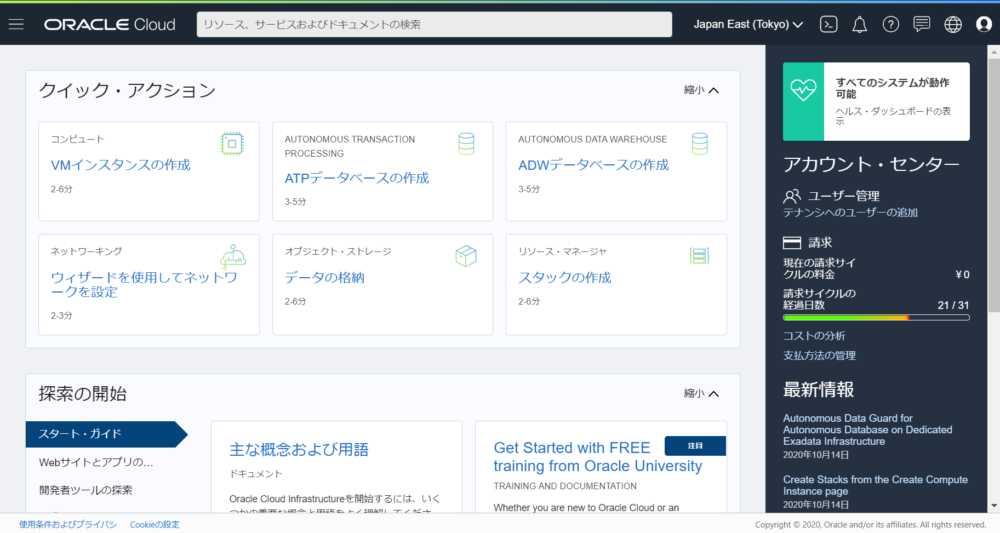
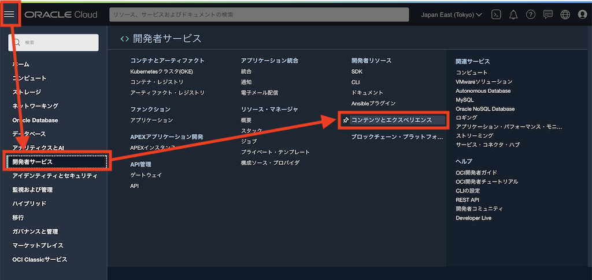

この文書は Oracle Content and Experience (OCE) のインスタンス作成方法をステップ・バイ・ステップで紹介するチュートリアルです。
【お知らせ】
この文書は、2021年7月時点での最新バージョン(21.6.1)を元に作成されてます。
チュートリアル内の画面ショットについては Oracle Content and Experience の現在のコンソール画面と異なっている場合があります。
1. 準備
1.1 OCE インスタンス作成手順の説明
インスタンスの作成手順は以下の通りです

このチュートリアルでは、以下の条件で作成します
- ホームリージョンは US East(Ashburn) を選択
- インスタンスの作成ユーザーは テナント管理ユーザー
- コンパートメントを作成(コンパートメント名=OCE)
- ライセンス・タイプは Premium Edition を選択
1.2 Oracle Cloud の環境を準備する
Oracle Cloud のアカウントを準備します。無料のトライアル環境も利用することもできますので、この機会に取得してみましょう。
なお、トライアル環境の取得には認証用のSMSを受け取ることができる携帯電話と、有効なクレジットカードの登録が必要です（希望しない限り課金されませんので、ご安心ください）
トライアル環境のサインアップ手順はこちらをご確認ください。
1.3 Oracle Cloud にサイン・インする
OCE インスタンスは、Oracle Cloud Infrastructure コンソール（以降OCIコンソール）から作成します。ここでは、前の手順で作成した テナント管理ユーザー で OCI コンソールにアクセスします
こちらのチュートリアルもあわせてご確認ください
-
Webブラウザで、以下のURLにアクセスします
- https://cloud.oracle.com
-
Cloud Account Name （クラウドアカウント名） を入力し、Next をクリックします。
Cloud Account Name には、Oracle Cloud 契約時、もしくはトライアル環境を申し込んだ際に払い出される一意のID（クラウド・アカウント）を入力します
-
Single Sign-On (SSO) のIdentity Providersで oracleidentitycloudservice が選択されていることを確認し、その下の Continue をクリックします。

-
ユーザー名 と パスワード を入力し、サイン・インをクリックします

-
OCI コンソールが表示されます

1.4 委任ユーザーを作成する
この手順は必須ではありません。
委任ユーザーを作成せず、テナント管理ユーザーでOCEインスタンスを作成する場合は、ここをスキップして次の手順を実施してください
1.4.1 説明
OCE インスタンスの作成を実行するユーザーは、下記条件を満たす必要があります
- Oracle Identity Cloud Service (以降IDCS) よりフェデレーションされたユーザー (=IDCS ユーザー) であること
- IDCS の OCI_Administrators グループに所属していること (=OCI の管理権限が付与されていること)
1.4.2 IDCSコンソールを開き、IDCSユーザー（委任ユーザー）を作成する
IDCSコンソールにアクセスし、OCI_Administrators グループに所属するIDCSユーザー(=委任ユーザー)を作成します
-
OCIコンソールに Oracle Cloud 環境を取得した際に作成した テナント管理ユーザー でサインインします。
-
OCI コンソールの右上のユーザーアイコンをクリックし、「サービス・ユーザー・コンソール」 をクリックします

-
ホームリージョンのデータセンター(ここではAshburnが所属するNorth America)を選択し、Oracle Identity Cloud Service の 「管理コンソール」 をクリックします

-
IDCS コンソールが開きます。左ナビゲーションの 「ユーザー」 をクリックします

-
「追加」 をクリックします

-
「名」「姓」「ユーザー名/電子メール」 を入力し、「次」 をクリックします

-
OCI_Administrators グループを選択し、「終了」 をクリックします

-
作成した委任ユーザーに対してメールが送信されます。仮パスワードを利用し、OCIコンソールにサインインします。この時にパスワードの再設定します
-
委任ユーザーで OCE インスタンスを作成する場合は、このまま次の手順を実施します
1.5 コンパートメントの作成
この手順は必須ではありません。
ただし、セキュリティ上の理由から、Oracleでは、既存のルート・コンパートメントを使用するのではなく、
新規コンパートメントを作成して使用することを強くお薦めします。
OCE インスタンスを作成する際に、コンパートメント(Compartment) を指定します。必要に応じて OCE インスタンスが利用するコンパートメントを事前に作成します。 ここでは、ルート・コンパートメント配下に OCE コンパートメントを作成します
-
OCI コンソールを開き、左上のメニュー→ 「アイデンティティとセキュリティ」→「コンパートメント」 を選択します

-
「コンパートメントの作成」 をクリックします

-
「名前」 と 「説明」 を入力し、「コンパートメントの作成」 をクリックします（ここでは OCE コンパートメントを作成）

-
OCE コンパートメントが作成されます

2. OCE インスタンスの作成
インスタンスを作成します。ここでは、ホームリージョンである US East(Ashburn) で作成します
2.1 OCE インスタンスを作成するリージョンについて
インスタンスは、OCI のホームリージョンが所属するデータ・リージョン内に作成 することを推奨します。
OCI のホームリージョンではないデータ・リージョンで OCE インスタンスを作成する場合、OCE インスタンスを作成するリージョンと同一のデータ・リージョンの IDCS をユーザー管理に使用しなければいけない（=ホームリーションにあるOCIとのフェデレーションが事前定義されたPrimaryのIDCSを利用できない）、という制限があるため
-
例）OCI のホームリージョンが 東京(ap-tokyo-1) の場合
-
APAC データ・リージョン内のリージョン（東京、大阪、ソウル、シドニーほか）にOCEインスタンスを作成
- APAC データリージョンの IDCS を利用（Primary の IDCS。OCIとのフェデレーションが事前定義済）
-
NA（北米）データ・リージョン内のリージョン（Ashburn、Phoenixほか）にOCEインスタンスを作成
-
NA(北米)データリージョンの IDCS を利用（Primary ではない IDCS。OCI とのフェデレーション設定なし）
-
ユーザー情報の管理が Primary の IDCS と NA の IDCS で別々の管理となる
-
-
-
参考情報
2.2 OCE インスタンスの作成
-
OCI コンソールを開きます
-
OCE インスタンスを作成するホームリージョン（例: Japan East(Tokyo) など）を選択します。このでは US East(Ashburn) を選択しています

-
左上のメニューをクリックし、「開発者サービス」→「コンテンツとエクスペリエンス」 をクリックします

-
画面左の「コンパートメント」より、OCEインスタンスを作成するコンパートメント （ここでは OCE コンパートメント）を選択し、「インスタンスの作成」 をクリックします

-
「インスタンス名」 と 「説明」 を入力します
-
「コンパートメント」 にあらかじめ選択したものが設定されていることを確認します（この場合 OCE コンパートメントを選択）。選択されていない場合は、ここでコンパートメントを選択します
-
「License Type(ライセンス・タイプ)」 を選択します（ここでは Premium Edition を選択）。ライセンス・タイプの詳細は 2.4 OCEインスタンスの作成オプションについて をご確認ください
-
「インスタンスの作成」 をクリックします

[TIPS]
インスタンス名は、OCE インスタンスにアクセスする際の URL に含まれます（下記URLの <OCE Instance> に該当）
https://<OCE Instance>-<Cloud account>.cec.ocp.oraclecloud.com/documents/home -
-
インスタンスの作成（プロビジョニング）が開始されます。プロビジョニング中のインスタンス名（ここでは oce002）をクリックします

-
しばらく待つと、OCE インスタンスの作成が完了します。OCE インスタンスがアクティブであることを確認します

-
OCE インスタンス詳細の 「インスタンスのオープン」 をクリックします

-
OCE インスタンスのホーム画面が開きます

2.3 OCE インスタンスの作成完了後の確認
この手順は必須ではありません
OCE インスタンスの作成により、OCI に以下のリソースが自動的に作成されます。必要に応じて確認してください
-
オブジェクトストレージに OCE 専用のバケットが自動生成されます
-
バケット名の指定や変更はできません
-
OCE インスタンス利用中は削除しないでください
-
-
ルート・コンパートメントに OCE_Internal_Storage_Policy のポリシーが自動生成されます。ポリシーを確認するには、「アイデンティティとセキュリティ」→「ポリシー」で、ルート・コンパートメントを選択します
- このポリシーは、OCE インスタンス利用中は削除しないでください
また、OCE インスタンス作成ユーザーに対して、Welcome to Oracle Cloud. Your Content and Experience service is ready for use の通知メールが送信されます
2.4 OCEインスタンスの作成オプションについて
OCEインスタンスを作成する際に、様々なオプションを選択することができます。ここでは、そのオプションについて説明します（※ 太字斜体 がデフォルト設定）
-
ライセンス・タイプ
-
Premium Edition (OCEのフル機能を利用できる新規ライセンスを取得)
-
BYOL Edition (所有するのOracle WebCenterライセンスを持ち込む)
-
Starter Edition (OCEの機能限定版ライセンスを取得。Always Free の対象)
-
-
インスタンス・タイプ
-
プライマリ (プライマリーインスタンス。本番環境等で利用)
-
プライマリでない (非プライマリーインスタンス。本番用のプライマリインスタンスとは別に開発/検証/災害対策等の環境として利用。Starter Edition選択時は項目選択不可)
-
-
アップグレード・スケジュール
-
即時アップグレード (新しいリリースが利用可能になったら即座にアップグレードされる)
-
アップグレードの遅延 (新しいリリースが利用可能になっても、1リリースサイクル遅れてアップグレードされる。Starter Edition選択時は項目選択不可)
-
-
インスタンスのアクセスタイプ
-
パブリック (パブリックなインターネットを経由したアクセス)
-
プライベート (OCI FastConnect による閉域網アクセス。Starter Edition選択時は項目選択不可)
-
-
代替のIdentity Cloud Serviceの使用
-
デフォルトのIDCSインスタンスではない別のIDCSインスタンスを、OCEユーザーの管理で利用する場合のみ指定（例:本番環境と開発環境でユーザー管理を別々にしたい）
-
「IDCSドメイン名」と「IDCSドメインID」を指定する
-
Starter Edition選択時は項目選択不可
-
以下のマニュアルも合わせてご確認ください
以上でこのチュートリアルは終了です。